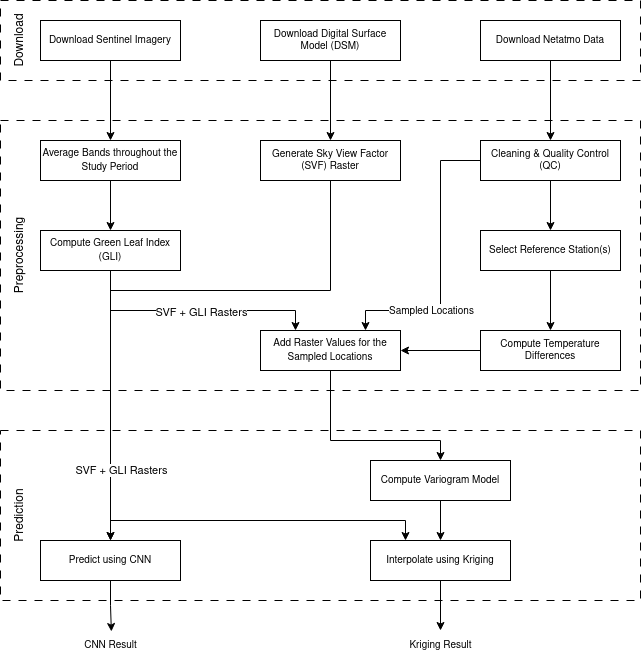

Urban Heat Island Detector
Getting started
This project uses poetry to manage its dependencies, run poetry install --no-root to install all dependencies mentioned in pyproject.toml. After that, execute eval $(poetry env activate) to activate the virtual environment.
Prerequisites
Sentinel imagery download
In src/download/sentinel.py, the constant product_url is defined based on this documentation to locate any product in the Copernicus OData API. Adjust this constant according to your search requirements.
Ensure you have a .env file in the root folder to store the ACCESS_TOKEN and SECRET_ACCESS_KEY. These credentials can be generated by following this guide, allowing you to download images from the Copernicus S3 endpoint.
Study area
In order to detect an UHI, define a study area for the desired city using a GIS tool or similar, and export it as a shapefile with the following path: data/[city-name]/shapefiles/study_area.shp.
Replace [city-name] by the real name of the studied city. All the data related to that city will be stored in the folder data/[city-name].
Configuration
All configuration parameters are specified in config.yaml, including settings for the logging system, data download, processing, and quality control. It also contains parameters for CNN training and prediction, as well as interpolation.
Dataflow
The diagram below outlines the complete process for detecting urban heat islands. Each step should be executed individually, as some involve manual intervention or require special attention. This also makes it possible, in case you want to generate a heat island map without using meteorological stations, to skip all the steps on the right side of the diagram that do require station data. For further details, refer to the "Running" section.

Running
This section explains the purpose of each step in the dataflow diagram, detailing its requirements, expected output, and where the results are stored.
All commands follow the format: python3 main.py -c [city-name] -s [step-name]
Replace [city-name] with the name of the city you're working on. All data associated with that city is stored in the data/[city-name]/ directory.
Note: Understanding each step's requirements and how the results are stored enables you to create your own modules and integrate them into main.py.
Download steps
Download Sentinel Imagery
This is an automated step, whose command is: python3 main.py -c [city-name] -s download-sentinel.
Requirements: Access tokens for the Copernicus S3 endpoint (see the "Prerequisites" section), a study area shapefile located at data/[city-name]/shapefiles/study_area.shp or at the path specified in config.yaml, and a defined study period in the same configuration file.
Result: The downloaded satellite bands are stacked into a single file per day, cropped, and saved in the data/[city-name]/rasters/sentinel folder. Please, make sure that the resulting rasters cover the full study area.
Download Digital Surface Model
This is a manual step. The digital surface model should be saved in data/[city-name]/rasters/ as mds.tif.
Download Netatmo Data
This is an automated step, whose command is: python3 main.py -c [city-name] -s download-netatmo.
Requirements: Update the Netatmo token in the config.yaml file at download.netatmo.token. You can obtain the token from https://dev.netatmo.com/apidocumentation/weather.
Note: This token has an expiration time. If your study area includes many stations or covers a long time period, the token might expire during processing. In that case, you'll need to refresh the token and re-run the command.
Result: A CSV file will be created for each Netatmo station available within the specified study area and period. Each file is named using the station's MAC address ([MAC address].csv) and is saved in the data/[city-name]/stations/ directory. Additionally, a summary file named netatmo_stations.csv, containing the MAC addresses and coordinates of all stations, will also be saved in the same directory.
Preprocessing steps
Average bands throughout the study period
This is an automated step, whose command is: python3 main.py -c [city-name] -s average-bands.
Requirements: Raster files obtained in "Download Sentinel Imagery" step.
Result: For each band (by default, the bands used to compute indices such as GLI: blue, green, nir, red, swir1 and swir2), an average raster is created and saved in the data/[city-name]/rasters directory with the filename format average_[band-name].tif.
Compute Green Leaf Index or Other Indices
This is an automated step, whose command is: python3 main.py -c [city-name] -s compute-gli.
Requirements: The averaged bands generated during the "Average bands throughout the study period" step.
Result: Running the process will generate a file named gli.tif in the data/[city-name]/rasters/ directory.
Note: While the example command computes the Green Leaf Index (GLI), you can also specify other indices using the -s flag:
- compute-nbai: Normalized Built-up Area Index
- compute-ndti: Normalized Difference Turbidity Index
- compute-ndvi: Normalized Difference Vegetation Index
To compute additional indices, simply add a new .py file to the src/indices/ directory and register it in main.py.
Generate Sky View Factor Raster
This is an automated step, whose command is: python3 main.py -c [city-name] -s compute-svf.
Requirements: A Digital Surface Model (DSM) raster file named mds.tif must be located in the data/[city-name]/rasters/ directory. This file should be generated during the "Download Digital Surface Model" step.
This step relies on the saga_cmd command-line tool, so SAGA GIS must be installed and accessible from the command line. On Debian/Ubuntu, you can install it using: sudo apt-get install saga
Result: After running the process, a new file named svf.tif will be generated in the data/[city-name]/rasters/ directory.
Temperature Cleaning and Quality Control
This is an automated step, whose command is: python3 main.py -c [city-name] -s perform-temperature-qc.
Requirements: All the [MAC address].csv files and the netatmo_stations.csv generated during the "Download Netatmo Data" step.
Result: After running the process, a new file named temperatures.csv will be generated in the data/[city-name]/stations/ directory.
Select Reference Stations
This is a manual step. Open the netatmo_stations.shp file generated during the "Temperature Cleaning and Quality Control" step, choose the reference stations situated in rural areas and add their MAC addresses to the config.yaml file.
Compute Temperature Differences
This is an automated step, whose command is: python3 main.py -c [city-name] -s compute-differences.
Requirements: The temperatures.csv file generated during the "Temperature Cleaning and Quality Control" step and the reference stations noted in the configuration file during the "Select Reference Stations" step.
Result: After running the process, a new file named diffs.csv will be generated in the data/[city-name]/stations/ directory.
Add Raster Values for the Sampled Locations
This is an automated step, whose command is: python3 main.py -c [city-name] -s add-raster-values.
Requirements: The diffs.csv file generated during the "Compute Temperature differences" step and explanatory variables rasters (svf.tif and gli.tif) in the data/[city-name]/rasters/ directory. The explanatory variables to use must be declared in the config.yaml file.
Result: After running the process, a new file named full_data.csv will be generated in the data/[city-name]/ directory.
Prediction steps
Compute the Variogram Model & Interpolate using Kriging
This is an automated step, whose command is: python3 main.py -c [city-name] -s predict-with-kriging.
Requirements: The full_data.csv file generated during the "Add Raster Values for the Sampled Locations" step. Explanatory variable rasters (svf.tif and gli.tif) located in the data/[city-name]/rasters/ directory. The explanatory variables to be used must be specified in the config.yaml file.
Result: The interpolation result will be saved as kriging_result.tif in the data/[city-name]/results/ directory. A variogram.png file will also be generated in the same directory, showing the fitted variogram used during kriging. Make sure the variogram is properly fitted, if not, adjust the initial parameters and rerun this step.
Predict using the CNN
This is an automated step, whose command is: python3 main.py -c [city-name] -s predict-with-cnn.
Requirements: svf.tif and gli.tif, or any other variable declared in the config.yaml file, must be stored in the data/[city-name]/rasters/ directory. The model weights must also be located at src/cnn/checkpoint.pth.tar.
Result: The CNN result will be saved as cnn_result.tif in the data/[city-name]/results/ directory.
Note: If the network has not been trained before, and therefore the weights are not stored at src/cnn/checkpoint.pth.tar, then run this command to train it: python3 main.py -c [city-name] -s train-cnn. A kriging interpolation must have been done before, because the resulting interpolation.tif file is used as the target, while the explanatory variables (which must exist in the data/[city-name]/rasters directory) are used as predictor variables.